- Physics-based simulation on a miniaturized cable-driven soft robot (< 6 mm in diameter) with collision-free motion planning and navigation in unstructured anatomical environments under the SOFA Framework . ♦
-
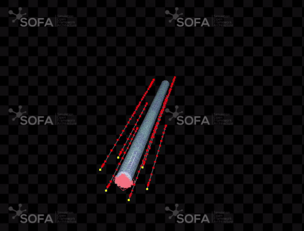
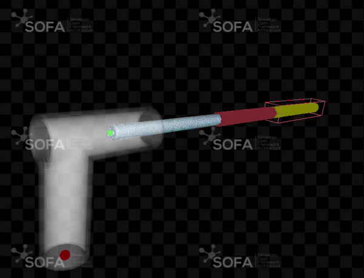
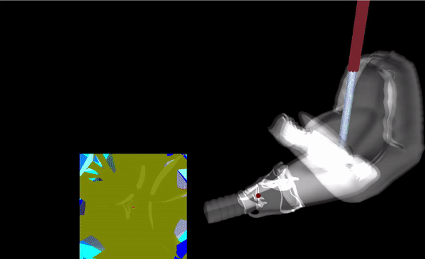
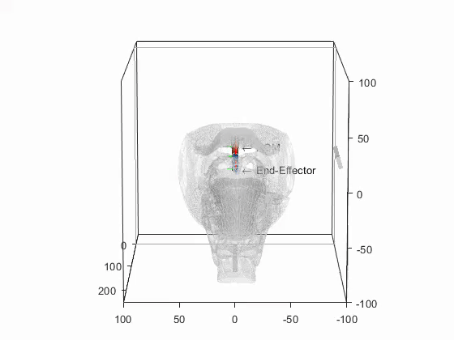
×
BIO
<<<<<<< HEAD I joined CUHK as a Research Assistant Professor of Electronic Engineering in August 2023. I'm interested in flexible robots, mechatronics, robot perception, sensorimotor control, virtual environments and simulations, and robot intelligence.
From 2022 to 2023, I was a Postdoctoral Fellow at CUHK working with Prof. Hongliang Ren. Before that, I received my PhD degree in Mechanical Engineering at The Hong Kong Polytechnic University in 2022 under the supervision of Dr. Henry K. Chu and Prof. Li Cheng.
======= I joined CUHK as a Research Assistant Professor of Electronic Engineering in August 2023. I'm interested in flexible robots, mechatronics, robot perception, sensorimotor control, virtual environments and simulations, and robot intelligence.
From 2022 to 2023, I was a Postdoctoral Fellow at CUHK working with Prof. Hongliang Ren. Before that, I received my PhD degree in Mechanical Engineering at The Hong Kong Polytechnic University in 2022 under the supervision of Dr. Henry K. Chu and Prof. Li Cheng.
>>>>>>> ffa6ee71b40d62ea1f49c89a9acbfcc185e332fd [Google Scholar][Research Gate]PROJECTS
- 1) Semi-Autonomous Surgical Electrocautery System using A Soft Robot With Thermal Servoing Control: To develop a miniature soft robotic tool for accurate, semi-autonomous surgical electrocautery with the aid of real-time thermal servoing feedback♦
- 2) Enabling Automation of Surgical Blood Suction: Developed a miniature soft robotic tool for autonomous blood suction at the surgical site with the help of image processing and visual feedback (T-MECH 2021a)
-
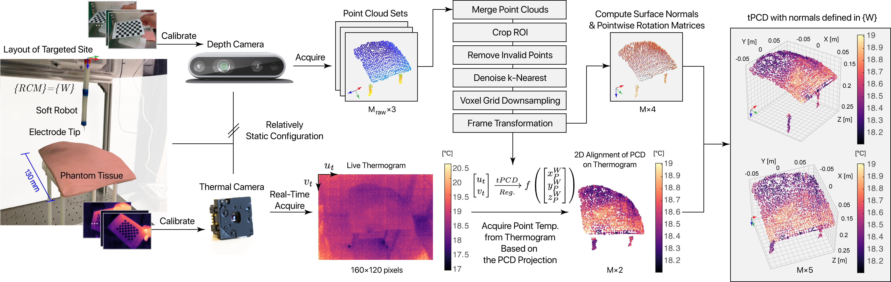 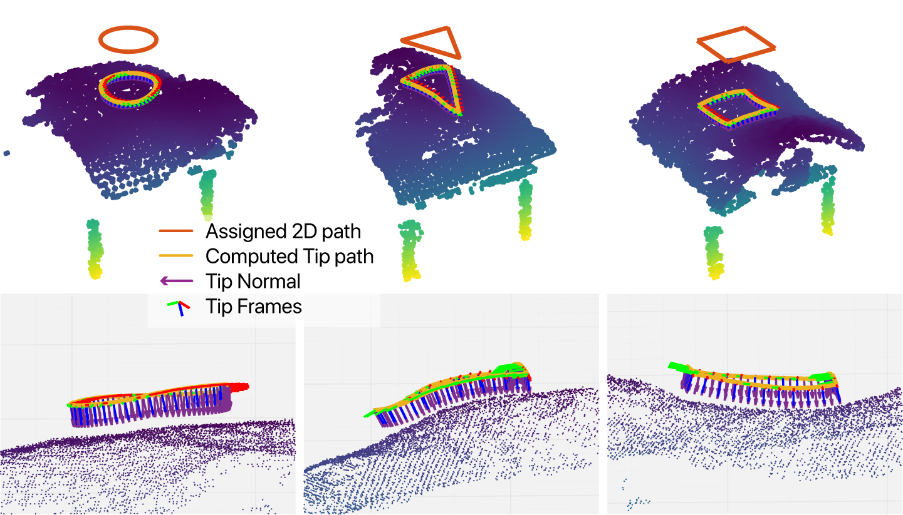 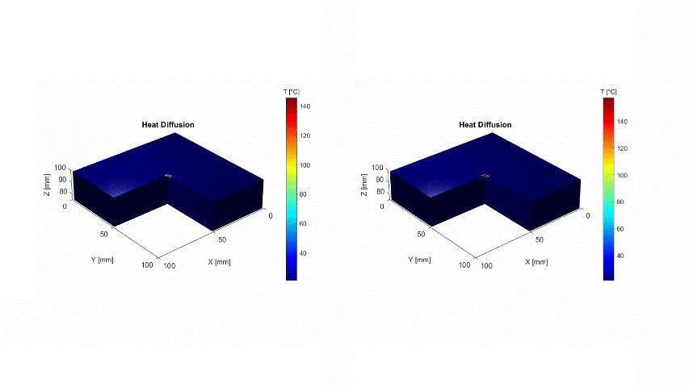 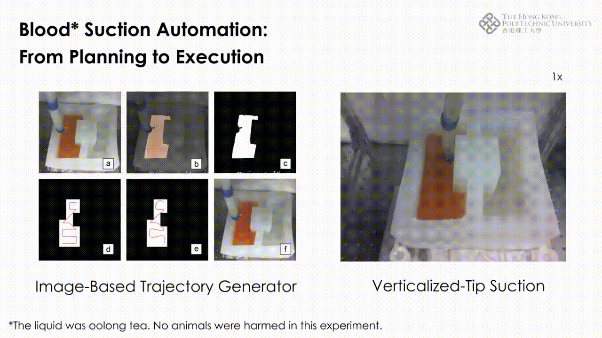
×
- 1) Model-based control: Proposed a mechanics-based kinematic model that can better fit the soft-bodied cable-driven robots. Opensourced a whole-body motion planning algorithm in constrained conditions and structured environment (RA-L 2022)
- 2) Model-free control: Investigated the feasibility and performance of a visual servoing approach for unknown payload adaption and a learning-based IK solver (AIM'20, ROBIO'19)
- 3) Stiffness control: Proposed a pure actuation-based method that can upgrade most of the existing cable-driven soft robots to become the variable-stiffness version without using any onboard sensors (T-MECH 2021b)
- 4) MF control: Developed an intuitive, low-cost master-follower system that allows the operator to steer the redundant soft robot remotely by hand gestures
-


 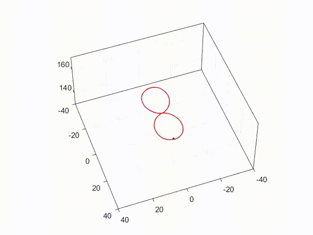
×
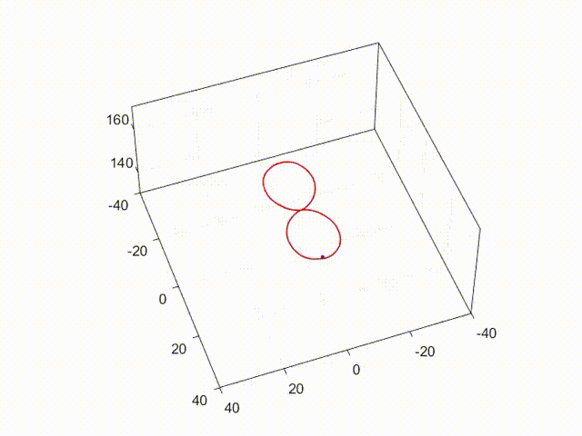
×
- 1) Motion planning of comericial robot arms in V-REP, RoboDK, and real-world environment
- 2) Coupled Multiple Dynamics Movement Primitives (DMP) Generalization for Deformable Object Manipulation
-
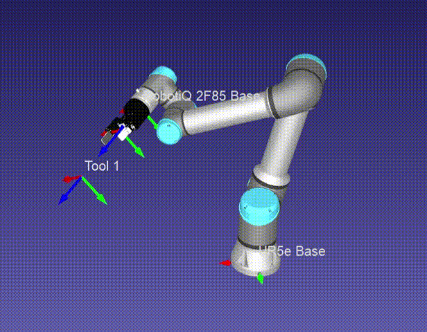 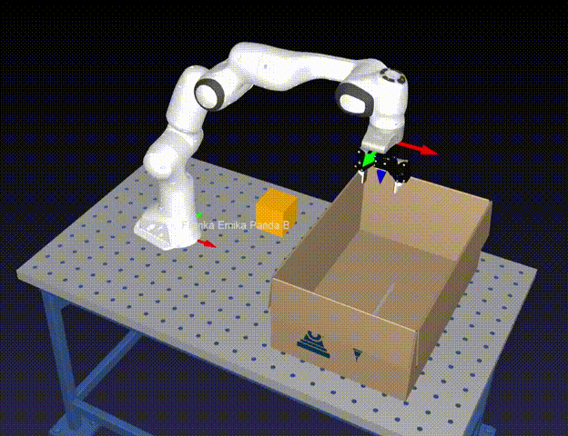 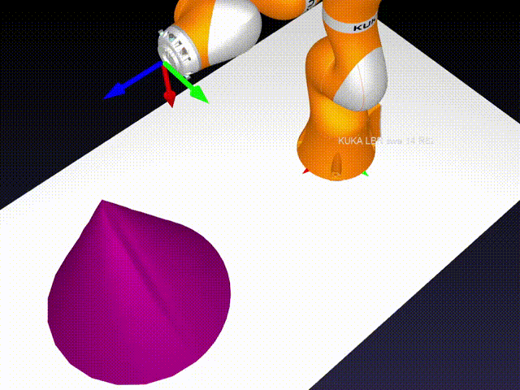
 ×
×
♦On going projects.
SELECTED PUBLICATIONS
Journal Papers
|
T-II'23 
×
|
Sim-to-Real Transfer of Soft Robotic Navigation Strategies That Learns from the Virtual Eye-in-Hand Vision |
|---|---|
| Jiewen Lai*, Tian-Ao Ren*, Wenchao Yue, Shijian Su, Jason Y. K. Chan, Hongliang Ren | |
| IEEE Transactions on Industrial Informatics (T-II). 2023 | |
| doi video Dr Barbara Kwok Young Postdoc Travel Grants Award |
|
SORO'23 
×
|
Lightweight Pneumatically Elastic Backbone Structure with Modular Construction and Nonlinear Interaction for Soft Actuators |
|---|---|
| Yang Yang, Jiewen Lai, Chaochao Xu, Zhiguo He, Pengcheng Jiao, Hongliang Ren | |
| Soft Robotics. 2023 | |
| doi |

×
|
Gesture-based Steering Framework for Redundant Soft Robots |
|---|---|
| Jiewen Lai, Bo Lu, Kaicheng Huang, Henry K. Chu | |
| Under Review. 2022 | |
| video1 video2 video3 |
|
RA-L'22 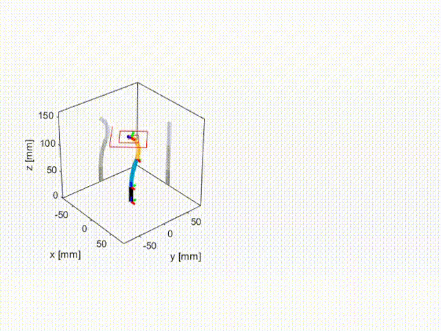
×
|
Constrained Motion Planning of A Cable-Driven Soft Robot with Compressible Curvature Modeling |
|---|---|
| Jiewen Lai, Bo Lu, Qingxiang Zhao, Henry K. Chu | |
| IEEE Robotics and Automation Letters (RA-L). 2022 | |
| pdf doi video1 video2 code |
|
T-MECH'21 
×
|
Variable-Stiffness Control of A Dual-Segment Soft Robot using Depth Vision |
|---|---|
| Jiewen Lai, Bo Lu, Henry K. Chu | |
| IEEE/ASME Transactions on Mechatronics (T-MECH). 2021 | |
| pdf doi video |
|
T-MECH'21 
×
|
Verticalized-Tip Trajectory Tracking of A 3D-Printable Soft Continuum Robot: Enabling Surgical Blood Suction Automation |
|---|---|
| Jiewen Lai, Kaicheng Huang, Bo Lu, Qingxiang Zhao, Henry K. Chu | |
| IEEE/ASME Transactions on Mechatronics (T-MECH). 2021 | |
| pdf doi video |
Conference Papers

×
|
Toward Vision-based Adaptive Configuring of A Bidirectional Two-Segment Soft Continuum Manipulator |
|---|---|
| Jiewen Lai, Kaicheng Huang, Bo Lu, Henry K. Chu | |
| 2020 IEEE/ASME International Conference on Advanced Intelligent Mechatronics (AIM'20) | |
| pdf doi video |

×
|
A Learning-based Inverse Kinematics Solver for a Multi-Segment Continuum Robot in Robot-Independent Mapping |
|---|---|
| Jiewen Lai, Kaicheng Huang, Henry K. Chu | |
| 2019 IEEE International Conference on Robotics and Biomimetics (ROBIO'19) | |
| best paper finalist awardpdf doi code |
Thesis
|
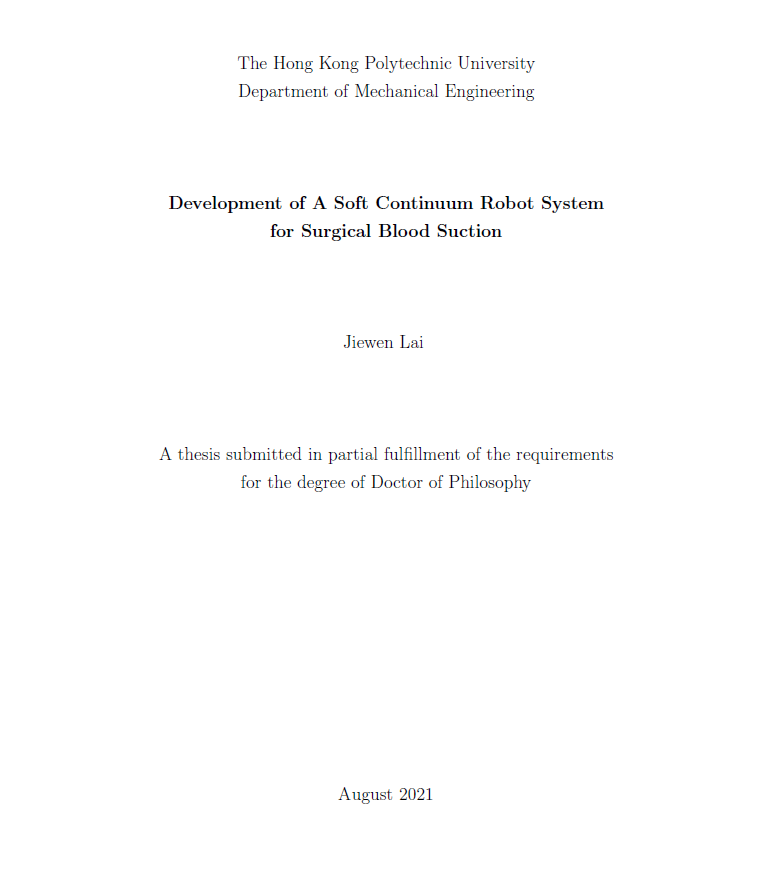
×
|
Development of A Soft Continuum Robot System for Surgical Blood Suction |
|---|---|
| Jiewen Lai | |
| Ph.D. Thesis, The Hong Kong Polytechnic University. 2021/22. | |
| 4-page synopsis |
ACADEMICS
Editorship:
Reviewer:
CONTACT
Jiewen Lai, Ph.D.
Address: Rm 313, Ho Sin Hang Engg. Bldg., CUHK, NT, Hong Kong
E-mail: jwlai [ət] ee.cuhk.edu.hk
MISC.
-
About this simple monomial page website -
 Fun with particles.js - a lightweight JavaScript library for creating interactive particles.
Fun with particles.js - a lightweight JavaScript library for creating interactive particles.- 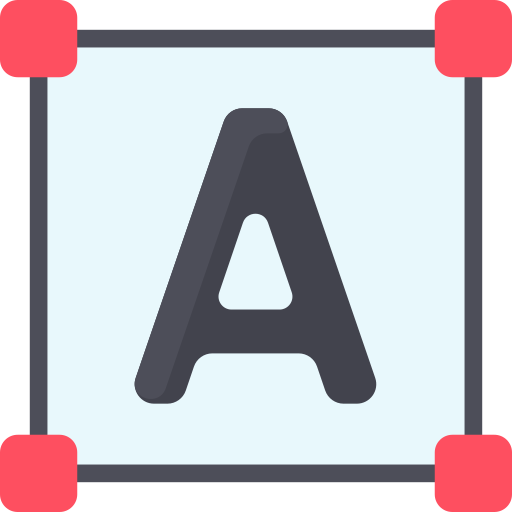 Color Hex: Amber#ffbf00 and BlackRussian#24252b.
-
Some links -
- 🩺 Medical Mechatronics Lab, CUHK
- 🔬 Biomimetic Robotics Lab, PolyU
 Your local time:
Your local time: